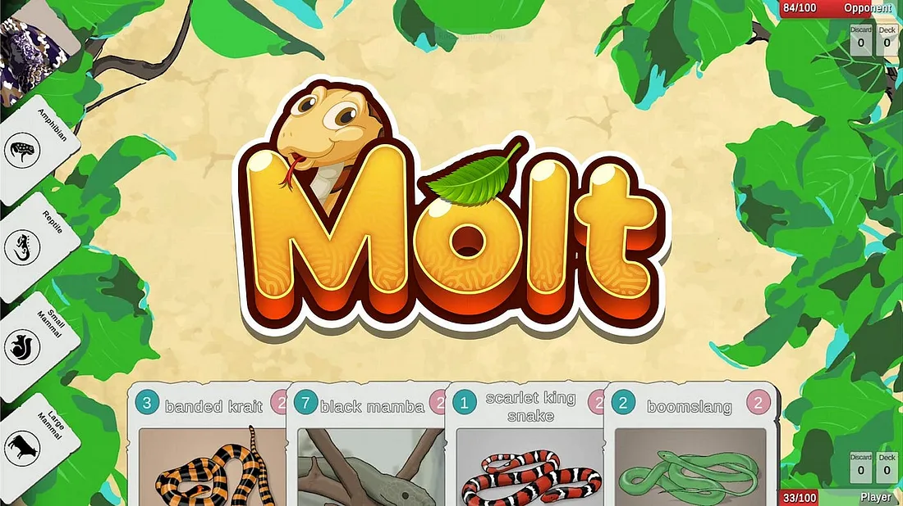

Brenden's Game Portfolio
Molt, the Snake-themed Card Game
Molt is a turn-based strategy card game in the vein of Hearthstone, Dominion and Wingspan. It aims to be educational and fun, with realistic depictions of snake species.
- Gamepad, touchscreen and mouse support
- Responsive UI for viewing and selecting cards in hand
- Single player and local multiplayer game modes
- Flexible and stackable “Action” card system
- CI/CD pipeline for automatic build and deployment to Steam
- No third party packages used
The game implements basic mechanics of a turn structure, card “buys”, putting cards into play via a food cost, and Action cards with various effects.
https://store.steampowered.com/app/2483240/Molt/

Tree Squirrel
PlayDate game
Very simple game written in C for the PlayDate console. Balance while climbing a tree, collecting acorns and avoiding spiders.

Thanks for taking a look!